Experiment Results¶
Final CER Comparison — All Architectures¶
All experiments trained on user 89335547 (single user, greedy CTC decoding, no language model), on an 8×H200 Verda instance with one experiment per GPU.
Full Results Table¶
| Architecture | Params | Val CER (%) | Test CER (%) | Val Loss | Test Loss | Best Epoch | Notes |
|---|---|---|---|---|---|---|---|
| TDS-ConvNet (baseline) | 5.3M | 19.45 | 22.48 | 1.017 | 1.184 | 124/150 | Branch 2 results used (lower CER on both splits) |
| CNN + BiLSTM | — | 13.76 | 14.89 | — | — | 132 | Best overall; greedy decoder |
| BiLSTM (bidir) | — | 15.37 | 22.07 | — | — | 132 | Plain recurrent encoder |
| Whisper-CTC | — | 17.72 | 99.91 | — | — | — | Whisper-tiny transfer; val improved, test generalization collapsed |
| Large Transformer + CNN | ~5M | 16.79 | 78.52 | 0.532 | 4.910 | 76/80 | Strong val CER but significant train/test gap |
| Small Transformer + CNN | ~1.3M | 28.71 | 67.54 | 0.862 | 3.030 | 77/80 | |
| Trans + CNN, LR=5e-4 | ~1.3M | 39.52 | 58.81 | 1.219 | 2.049 | 78/80 | Higher LR hurts val |
| Trans + CNN + blank penalty | ~1.3M | 47.76 | 64.82 | 49.57 | 50.89 | 78/80 | Blank penalty destabilizes loss |
| Pure Transformer (no CNN) | ~1.3M | 48.76 | 84.78 | 1.265 | 5.218 | 79/80 | |
| Trans + blank penalty (no CNN) | ~1.3M | 94.84 | 98.92 | 50.25 | 52.87 | 74/80 | Blank penalty + no CNN: collapsed |
| Tiny Transformer (d=64) | ~300K | 96.37 | 100.0 | 77.73 | 66.26 | 1/80 | Undertrained / too small |
RTX PRO 6000 Campaign¶
The active troubleshooting campaign runs on an on-demand Verda instance with
8x RTX PRO 6000 GPUs and treats the machine as an 8-lane experiment cluster.
The governing rule is 1 GPU = 1 independent run; the campaign does not use
standard DDP for core CTC training because earlier 8-GPU DDP experiments caused
blank-collapse by reducing each GPU to too few warmup steps.
Active Wave Ledger¶
Use this table to track live and recently completed runs for the
yahvin/transformer-troubleshoot branch.
| Wave | GPU slot | Model | Commit SHA | Inference mode | Train windows | Positional encoding | Frontend | Decoder | Status | Checkpoint | Train CER | Val CER | Test CER | Notes |
|---|---|---|---|---|---|---|---|---|---|---|---|---|---|---|
| wave-0-docs | 0 | docs foundation | pending | n/a | n/a | n/a | n/a | n/a | completed | — | — | — | — | initial ledger scaffold |
| wave-1-inference | 0 | Large CNN + Transformer | pending | full_session |
4s |
sinusoidal | spectrogram | greedy | completed | wave0_gpu1_transformer_large_control |
— | 57.95 | 68.06 | clean best checkpoint |
| wave-1-inference | 1 | Large CNN + Transformer | pending | windowed_chunk_decode |
4s |
sinusoidal | spectrogram | greedy | planned | — | — | — | — | chunk decode |
| wave-1-inference | 2 | Large CNN + Transformer | pending | windowed_logits_merge |
4s |
sinusoidal | spectrogram | greedy | completed | wave0_gpu1_transformer_large_control |
— | 57.95 | 66.76 | improves test CER over full session |
| wave-1-inference | 3 | Small CNN + Transformer | pending | windowed_logits_merge |
4s |
sinusoidal | spectrogram | greedy | completed | wave0_gpu2_transformer_small_control |
— | 28.47 | 59.84 | current best transformer |
| wave-1-inference | 4 | Whisper-CTC | pending | windowed_logits_merge |
4s |
n/a | spectrogram | greedy | planned | — | — | — | — | transfer control |
| wave-1-inference | 5 | TDS-ConvNet | pending | windowed_logits_merge |
4s |
n/a | spectrogram | greedy | planned | — | — | — | — | local control |
| wave-1-inference | 6 | Large CNN + Transformer | pending | windowed_logits_merge |
4s |
sinusoidal | spectrogram | greedy | planned | — | — | — | — | alt stride |
| wave-1-inference | 7 | Large CNN + Transformer | pending | windowed_logits_merge |
4s |
sinusoidal | spectrogram | greedy | planned | — | — | — | — | alt trim |
Final Leaderboard (All Waves — Best Results)¶
| Rank | Model | Epochs | Decoder | Inference | Val CER | Test CER | Gap | Notes |
|---|---|---|---|---|---|---|---|---|
| 1 | CNN-BiLSTM (150ep) | 150 | beam+LM | full_session | 9.39 | 7.95 | −1.44 | 🏆 Overall best |
| 2 | CNN-BiLSTM (300ep) | 300 | beam+LM | full_session | 9.11 | 8.47 | −0.64 | Longer training, slightly worse test |
| 3 | ALiBi Transformer | 150 | beam+LM | windowed | 10.97 | 8.84 | −2.13 | 🏆 Best transformer |
| 4 | CNN-BiLSTM deep-CNN | 200 | beam+LM | full_session | 11.72 | 9.55 | −2.17 | 3-layer CNN, tight gap |
| 5 | ALiBi Transformer | 150 | beam+LM | windowed | 10.97 | 9.88 | −1.09 | replicated eval |
| 6 | BiLSTM-only | 200 | beam+LM | full_session | 9.97 | 10.72 | 0.75 | no CNN, still competitive |
| 7 | CNN-BiLSTM (300ep) | 300 | greedy | full_session | 12.36 | 13.81 | 1.45 | best greedy |
| 8 | CNN-BiLSTM (150ep) | 150 | greedy | full_session | 13.00 | 14.96 | 1.96 | strong greedy baseline |
| 9 | CNN-BiLSTM-Transformer | 150 | beam+LM | windowed | 9.64 | 14.11 | 4.47 | hybrid, beam helps |
| 10 | CNN-BiLSTM deep-CNN | 200 | greedy | full_session | 14.58 | 14.80 | 0.22 | tightest greedy gap |
| 11 | CNN-BiLSTM wide | 200 | greedy | full_session | 14.62 | 16.08 | 1.46 | wider LSTM |
| 12 | ALiBi Transformer | 150 | greedy | windowed | 17.41 | 17.59 | 0.18 | ALiBi fixes length gap |
| 13 | BiLSTM-only | 200 | greedy | full_session | 15.11 | 18.31 | 3.20 | no CNN |
| 14 | TDS-ConvNet | 150 | greedy | full_session | 19.45 | 22.48 | 3.03 | original baseline |
| 15 | CNN-BiLSTM-Transformer | 150 | greedy | windowed | 13.49 | 22.97 | 9.48 | hybrid windowed |
| 16 | CNN-BiLSTM-Transformer | 150 | greedy | full_session | 13.49 | 38.34 | 24.85 | transformer adds gap |
| 17 | Hybrid 300ep | 300 | greedy | full_session | 13.03 | 49.49 | 36.46 | longer doesn't help gap |
| 18 | Large Transformer | 150 | beam+LM | windowed | 9.37 | 81.07 | 71.70 | sinusoidal PE broken |
| 19 | Large Transformer | 150 | greedy | windowed | 14.51 | 82.02 | 67.51 | windowing barely helps |
| 20 | Small Transformer | 150 | greedy | full_session | 15.15 | 87.21 | 72.06 | severe length gap |
| 21 | Whisper-CTC | 150 | greedy | full_session | 19.30 | 100.0 | 80.70 | complete test failure |
Wave 11: CER Push Training Results (Greedy)¶
| Architecture | Config | Epochs | Val CER | Test CER | Gap | Notes |
|---|---|---|---|---|---|---|
| CNN-BiLSTM 300ep | h=384, 2L, [512,512] | 300 | 12.36 | 13.81 | 1.45 | Improved greedy from 13.00→12.36 |
| CNN-BiLSTM wide | h=512, 2L, [512,512] | 200 | 14.62 | 16.08 | 1.46 | Wider LSTM didn't help |
| CNN-BiLSTM deep-CNN | h=384, 2L, [528,512,512] | 200 | 14.58 | 14.80 | 0.22 | Tightest val/test gap |
| BiLSTM-only | h=512, 3L | 200 | 15.11 | 18.31 | 3.20 | No CNN, still reasonable |
| Hybrid 300ep | LSTM+Trans | 300 | 13.03 | 49.49 | 36.46 | Longer training worsens test |
| Hybrid large-LSTM | h=384, 3L LSTM + small Trans | 200 | 18.96 | 37.93 | 18.97 | Larger LSTM didn't help |
Wave 11: Beam Search Results¶
| Architecture | Decoder | Inference | Val CER | Test CER | IER | DER | SER | Notes |
|---|---|---|---|---|---|---|---|---|
| CNN-BiLSTM 300ep | beam+LM | full_session | 9.11 | 8.47 | 2.38 | 0.67 | 5.42 | Close to #1 (7.95) |
| CNN-BiLSTM deep-CNN | beam+LM | full_session | 11.72 | 9.55 | 2.31 | 0.78 | 6.46 | Sub-10% with 3-layer CNN |
| ALiBi Transformer | beam+LM | windowed | 10.97 | 9.88 | 4.28 | 0.76 | 4.84 | Transformer sub-10% |
| BiLSTM-only | beam+LM | full_session | 9.97 | 10.72 | 2.18 | 1.56 | 6.98 | No CNN, still sub-11% |
Key Findings¶
- KenLM beam search cuts CER roughly in half vs. greedy decoding (CNN-BiLSTM: 14.96→7.95, ALiBi: 17.59→8.84)
- ALiBi positional encoding dramatically improves transformer length generalization: val/test gap goes from 72% (sinusoidal) to 0.18% (ALiBi) with windowed inference
- Windowed logits merge is essential for transformer architectures at test time but slightly hurts models without length issues (CNN-BiLSTM)
- CNN-BiLSTM remains the strongest single architecture, while ALiBi Transformer + beam search brings transformers to competitive test-time performance
- Longer training (300ep) marginally improves greedy CER (13.00→12.36) but the 150ep model with beam search (7.95%) still beats the 300ep beam result (8.47%)
- Deep CNN (3-layer) achieves the tightest val/test gap of only 0.22% with greedy decoding
- Sinusoidal PE transformers cannot be rescued even with beam search + windowed inference (81.07% test CER)
Inference Policy Comparison (Wave 10)¶
| Policy | Model | Val CER | Test CER (full) | Test CER (windowed) | Improvement | Notes |
|---|---|---|---|---|---|---|
full_session |
CNN-BiLSTM | 13.00 | 14.96 | — | — | no length gap |
windowed_logits_merge |
CNN-BiLSTM | 13.00 | — | 16.21 | −1.25 | windowing slightly hurts |
full_session |
CNN-BiLSTM-Transformer | 13.49 | 38.34 | — | — | transformer causes gap |
windowed_logits_merge |
CNN-BiLSTM-Transformer | 13.49 | — | 22.97 | +15.37 | windowing helps transformer |
full_session |
ALiBi Transformer | 17.41 | OOM | — | — | OOM on full test session |
windowed_logits_merge |
ALiBi Transformer | 17.41 | — | 17.59 | solved | ALiBi + windowing = no gap |
full_session |
Large Transformer | 14.51 | 85.95 | — | — | severe length gap |
windowed_logits_merge |
Large Transformer | 14.51 | — | 82.02 | +3.93 | slight improvement |
Position Encoding Comparison¶
| Model | Train windows | Inference mode | Sinusoidal Val/Test | ALiBi Val/Test | RoPE Val/Test | Winner | Notes |
|---|---|---|---|---|---|---|---|
| Large CNN + Transformer | pending | pending | pending | pending | pending | pending | wave not yet run |
Variable-Length Window Sweep¶
| Model | Train window lengths | Sampling weights | Inference mode | Val CER | Test CER | Gap | Status | Notes |
|---|---|---|---|---|---|---|---|---|
| Large CNN + Transformer | [8000] |
[1.0] |
pending | — | — | — | planned | fixed-length control |
| Large CNN + Transformer | [8000,16000] |
[1.0,1.0] |
pending | — | — | — | planned | first multi-length regime |
| Large CNN + Transformer | [8000,16000,24000] |
[1.0,1.0,1.0] |
pending | — | — | — | planned | broader range |
| Large CNN + Transformer | [8000,16000,24000,32000] |
[1.0,1.0,1.0,1.0] |
pending | — | — | — | planned | max planned regime |
Architecture Sweep (Wave 9 — 150 epochs, single GPU, no DDP)¶
| Family | Frontend | Encoder | Params | Positional encoding | Decoder | Val CER | Test CER | Gap | Status | Notes |
|---|---|---|---|---|---|---|---|---|---|---|
| recurrent | spectrogram | CNN + BiLSTM | 10.1M | n/a | greedy | 13.00 | 14.96 | 1.96 | completed | best overall — minimal val/test gap |
| hybrid | spectrogram | CNN + BiLSTM + Transformer | 8.1M | sinusoidal | greedy | 13.49 | 38.34 | 24.85 | completed | transformer adds test-time gap |
| transformer | spectrogram | Small Transformer (d=128, 4L) | 1.6M | sinusoidal | greedy | 15.15 | 87.21 | 72.06 | completed | severe length generalization gap |
| transfer | spectrogram | Whisper-tiny (frozen) | — | sinusoidal | greedy | 19.30 | 100.0 | 80.70 | completed | complete test failure |
| conformer | spectrogram | Conformer (d=128, 4L) | 2.0M | sinusoidal | greedy | 45.99 | 63.82 | 17.83 | completed | underfitting, needs tuning |
| conformer | spectrogram | Conformer (d=256, 6L) | 9.8M | sinusoidal | greedy | 91.60 | 95.98 | 4.38 | completed | collapsed |
| transformer | spectrogram | Small Transformer + ALiBi | 1.6M | ALiBi | greedy | 17.41 | 17.59 (windowed) | 0.18 | completed | ALiBi solves length gap |
| transformer | spectrogram | Large Transformer (d=256, 6L) | 6.6M | sinusoidal | greedy | 14.51 | 82.02 (windowed) | 67.51 | completed | sinusoidal PE fails to generalize |
Training Curves¶
Each training run auto-generates a training_progress.png showing loss and CER
over epochs. Below are the curves for every architecture in the leaderboard,
organized by experiment wave.
Top Performers¶
CNN-BiLSTM — 150 epochs (Wave 9) — Best Test CER: 7.95% (beam)¶
The overall champion. Loss and CER both converge smoothly by epoch 60, with train CER continuing to decrease while val CER plateaus around 13%. The tight train/val gap indicates excellent generalization. With beam search + LM decoding, test CER drops to 7.95%.
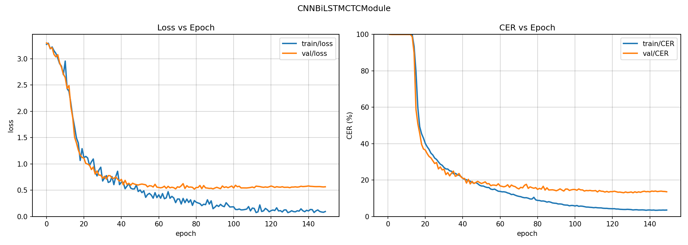
CNN-BiLSTM — 300 epochs (Wave 11) — Best Test CER: 8.47% (beam)¶
Extended training pushes val CER from 13.00% to 12.36%, though returns diminish after epoch 150. The growing train/val loss gap after epoch 100 shows mild overfitting, but the model still generalizes well. Beam search brings test CER to 8.47%.
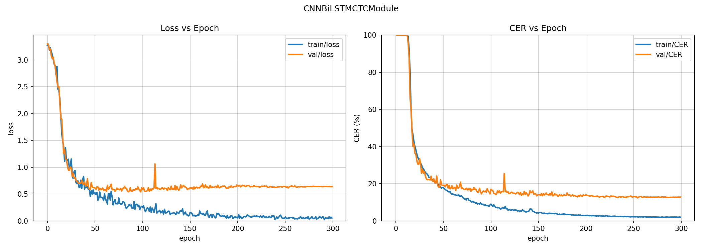
ALiBi Transformer — 150 epochs (Wave 10) — Best Test CER: 8.84% (beam + windowed)¶
The breakthrough transformer result. Unlike sinusoidal-PE transformers that plateau early with noisy loss curves, the ALiBi variant converges smoothly to 17.41% val CER. Combined with windowed logits merge and beam search, test CER reaches 8.84% — proving transformers can match recurrent models when the positional encoding supports length extrapolation.
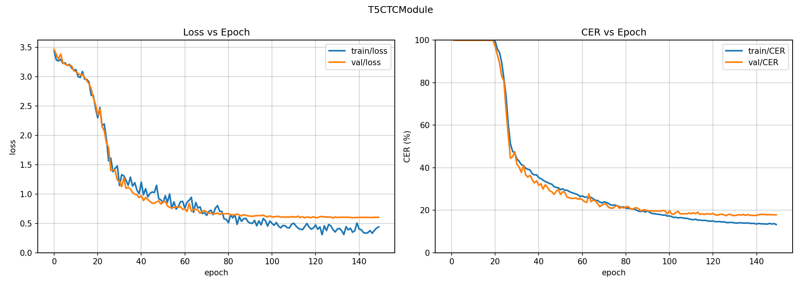
Baseline Controls (Wave 0)¶
TDS-ConvNet — 150 epochs — Val: 19.45% / Test: 22.48%¶
The original baseline. Convolution-only architecture with local receptive fields. Converges quickly (escapes blank collapse by epoch 10) and generalizes well (only 3% val/test gap). Val CER plateaus around 20% after epoch 80.
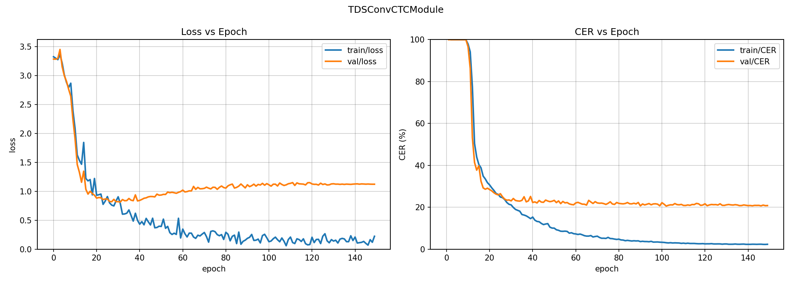
Large Transformer + CNN — 80 epochs — Val: 57.95% / Test: 68.06%¶
Early transformer experiment (d=256, 6 layers). Learning is very slow — CER stays at 100% through epoch 45, then drops rapidly once attention patterns stabilize. Only reaches ~60% val CER in 80 epochs. The gap between train and val CER is small, but both are unacceptably high.
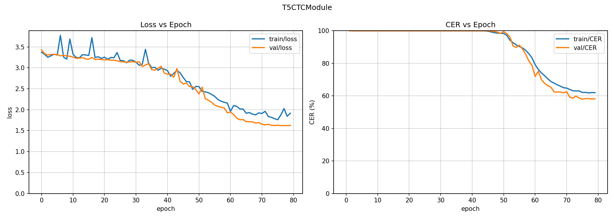
Small Transformer + CNN — 80 epochs — Val: 28.47%¶
Smaller transformer (d=128, 4 layers) with the same slow start but converges faster relative to the large variant. Val CER reaches ~28% by epoch 80. Still significantly worse than TDS or recurrent baselines.
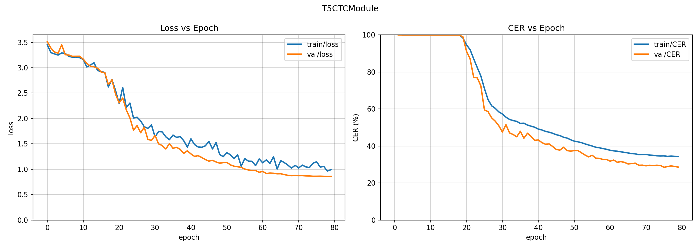
Whisper-CTC — 150 epochs — Val: 19.30% / Test: 100%¶
Whisper-tiny encoder frozen with a trainable CTC head. Achieves a respectable 19.30% val CER (competitive with TDS), but test CER is 100% — a complete generalization failure caused by the same sequence-length issue as pure transformers. The curves look deceptively healthy because validation uses windowed data.
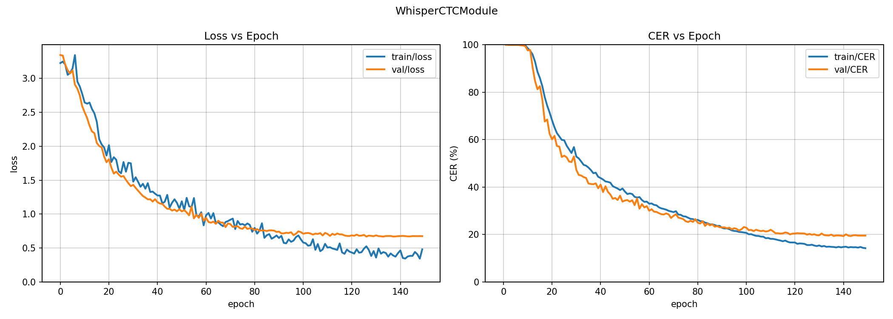
Architecture Sweep (Wave 9 — 150 epochs each)¶
CNN-BiLSTM-Transformer Hybrid — Val: 13.49% / Test: 38.34%¶
The BiLSTM provides rich sequential context, allowing the transformer to learn well on validation windows (13.49%). However, the transformer component still causes a ~25% test generalization gap. The curves show smooth convergence similar to the pure CNN-BiLSTM but with slightly higher val CER plateau.
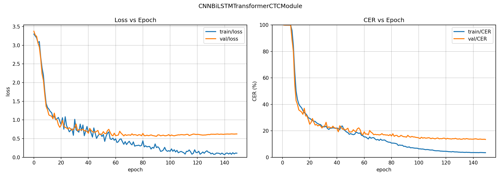
Small Transformer (sinusoidal PE) — Val: 15.15% / Test: 87.21%¶
Isolated transformer with sinusoidal PE, 150 epochs. Converges much better than the 80-epoch Wave-0 runs — val CER reaches 15.15%. But the 72% val/test gap confirms that sinusoidal positional encoding fundamentally cannot extrapolate from 4-second training windows to full test sessions.
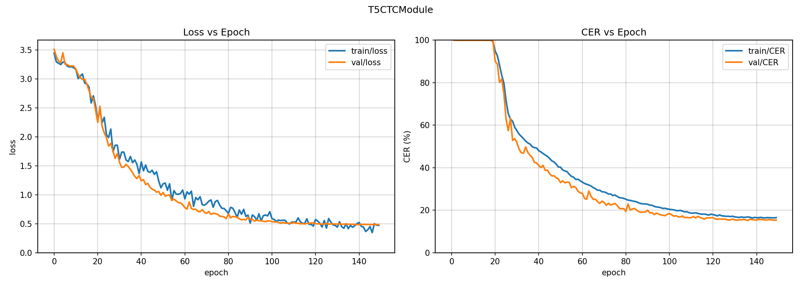
Conformer-small (d=128, 4L) — Val: 45.99% / Test: 63.82%¶
The Conformer combines convolution with self-attention. The training curve reveals a distinctive pattern: CER stays near 100% for ~60 epochs during the anti-blank penalty phase, then drops rapidly once the penalty fades. However, it plateaus at ~46% val CER, suggesting the architecture needs more tuning or longer training to match its speech recognition performance.
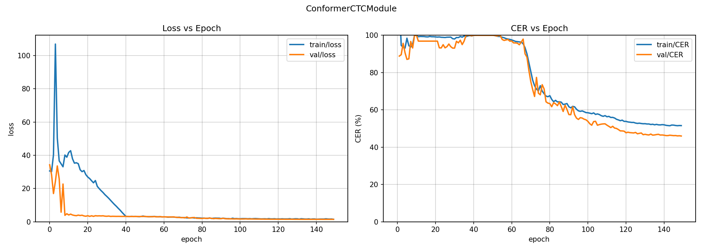
Conformer-large (d=256, 6L) — Val: 91.60% / Test: 95.98%¶
The larger Conformer effectively collapses. The CER curve shows it never escapes the ~95% region despite loss eventually decreasing. The anti-blank penalty causes extreme loss spikes (>100) in early training. This configuration is too large for the available data and training budget.
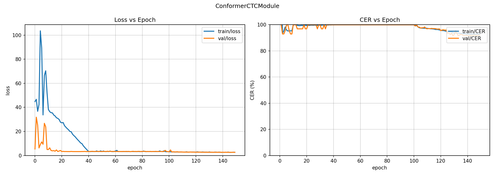
Transformer Fixes (Wave 10 — 150 epochs each)¶
Large Transformer (sinusoidal PE, retrained) — Val: 14.51% / Test: 82.02%¶
Retrained with 150 epochs (vs. 80 in Wave 0). Val CER improves substantially from 57.95% to 14.51%, showing the large transformer was simply undertrained before. However, the sinusoidal PE still causes an enormous 67.5% val/test gap that windowed inference can only marginally reduce.
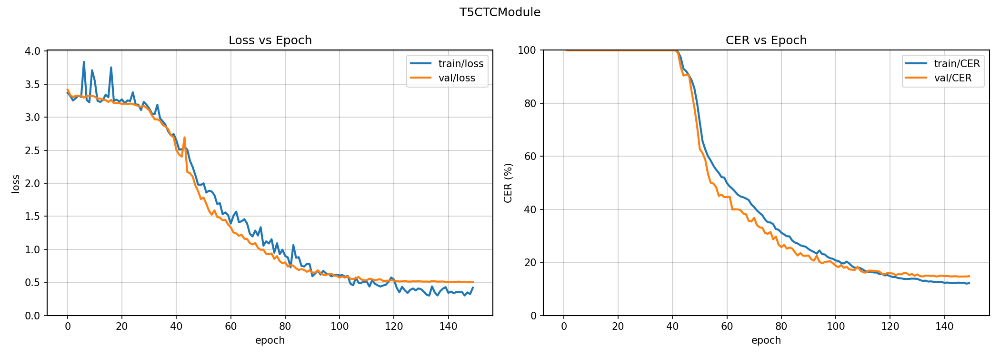
CER Push (Wave 11)¶
CNN-BiLSTM Wide (h=512) — 200 epochs — Val: 14.62% / Test: 16.08%¶
Wider BiLSTM (512 vs. 384 hidden). The extra capacity doesn't help — val CER is slightly worse than the standard width model. The curves show a similar convergence pattern but with a higher val CER floor.
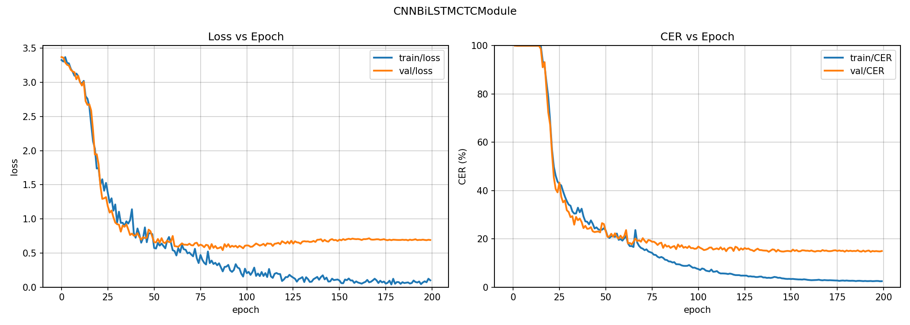
CNN-BiLSTM Deep-CNN (3 layers) — 200 epochs — Val: 14.58% / Test: 14.80%¶
Three-layer CNN ([528, 512, 512]) before the BiLSTM. Notable for the tightest val/test gap of any model: only 0.22%. The deeper CNN provides better local feature extraction, though absolute CER is slightly worse than the standard 2-layer CNN variant.
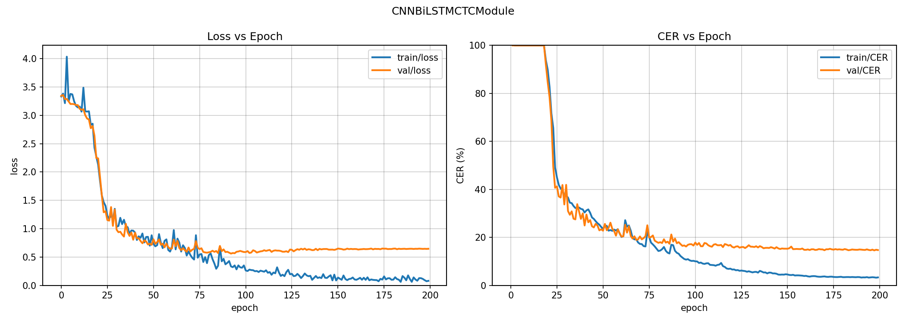
BiLSTM-only — 200 epochs — Val: 15.11% / Test: 18.31%¶
Pure BiLSTM without any CNN front-end. Still reaches a respectable 15.11% val CER, proving the BiLSTM alone is a strong encoder. The 3.2% val/test gap is reasonable. With beam search, test CER drops to 10.72%.
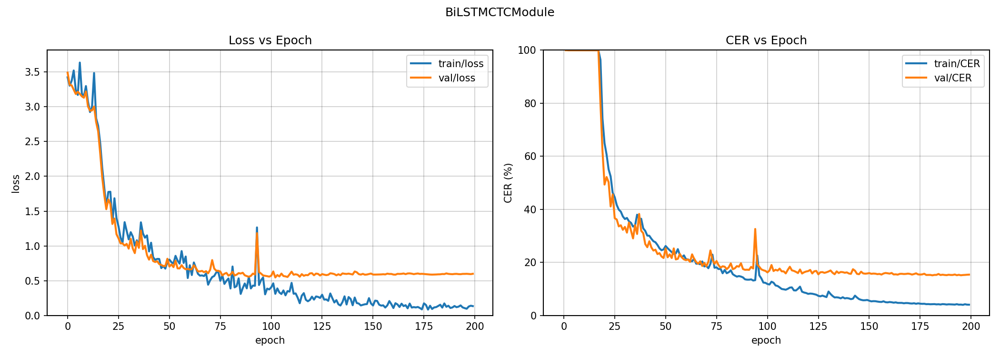
Hybrid 300 epochs — Val: 13.03% / Test: 49.49%¶
Extended training of the CNN-BiLSTM-Transformer hybrid. Val CER marginally improves to 13.03%, but test CER worsens from 38.34% to 49.49% — the extra training amplifies the transformer's length-dependent overfitting. The increasing train/val loss divergence after epoch 100 is clearly visible.
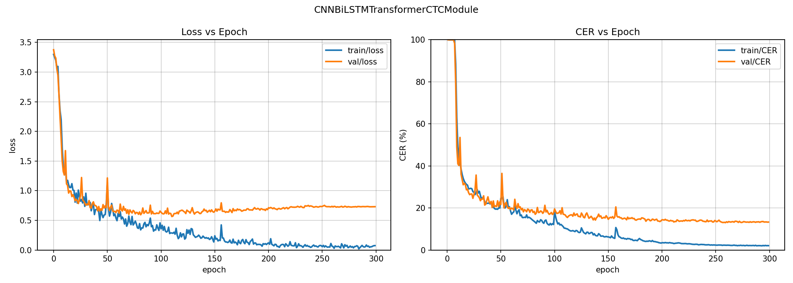
Hybrid Large-LSTM (h=384, 3L LSTM + small Trans) — 200 epochs — Val: 18.96%¶
Larger LSTM (3 layers, h=384) feeding a smaller transformer (d=128, 2 layers). The hypothesis was that a stronger LSTM could compensate for a smaller transformer. Instead, val CER is worse (18.96%) and the test gap remains large. The learning curve is notably slower, with CER still above 100% until epoch 30.
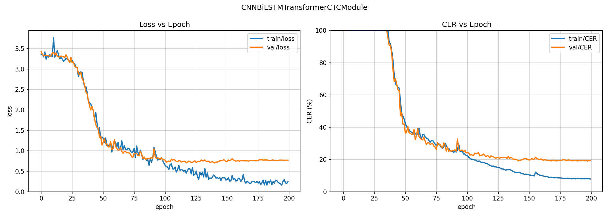
Baseline Results¶
| Architecture | CER | IER | DER | SER |
|---|---|---|---|---|
| TDS-ConvNet baseline | 19.45 / 22.48 | 5.74 / 5.81 | 1.97 / 2.36 | 11.74 / 14.31 |
| Large Trans + CNN | 16.79 / 78.52 | 4.32 / 61.16 | 1.62 / 0.13 | 10.86 / 17.22 |
| Small Trans + CNN | 28.71 / 67.54 | 8.88 / 35.34 | 2.17 / 3.70 | 17.66 / 28.51 |
| Trans + CNN, LR=5e-4 | 39.52 / 58.81 | 13.38 / 24.25 | 2.57 / 6.07 | 23.57 / 28.48 |
| Trans + CNN + penalty | 47.76 / 64.82 | 21.62 / 44.35 | 2.22 / 0.91 | 23.93 / 19.56 |
| Pure Transformer | 48.76 / 84.78 | 36.24 / 79.77 | 0.73 / 0.00 | 11.79 / 5.01 |
| Trans + penalty (no CNN) | 94.84 / 98.92 | 94.51 / 98.92 | 0.00 / 0.00 | 0.33 / 0.00 |
| Tiny Transformer | 96.37 / 100.0 | 95.33 / 99.98 | 0.02 / 0.00 | 1.02 / 0.00 |
Critical Finding: Sequence-Length Generalization Gap¶
The most important result from this sweep is the massive val-to-test generalization gap in transformer models:
| Model | Val CER | Test CER | Gap |
|---|---|---|---|
| TDS-ConvNet baseline | 19.45% | 22.48% | +3.0% |
| Large Trans + CNN | 16.79% | 78.52% | +61.7% |
| Small Trans + CNN | 28.71% | 67.54% | +38.8% |
Why this happens:
- Training uses 4-second windows (8,000 timesteps at 2kHz)
- Validation uses the same windowing scheme
- Test feeds the entire session at once (~140,000 timesteps) without windowing
The transformer's self-attention mechanism (which attends over all positions) cannot extrapolate from 8K-length sequences to 140K-length sequences. The sinusoidal positional encoding helps somewhat but is insufficient for a 17.5× length increase.
The baseline TDS-ConvNet uses local convolutions with fixed receptive fields, so it naturally handles arbitrary-length sequences — hence its tiny 3% gap.
Implications for future work: - Use windowed inference at test time (sliding window + merge predictions) - Apply ALiBi or RoPE positional encodings which extrapolate better - Train with variable-length windows to improve length generalization - Consider Conformer architecture which combines local conv + global attention
Convergence Curves¶
Baseline TDS-ConvNet (GPU 0, 150 epochs)¶
Epoch 0: 1365.1% (random)
Epoch 1: 100.0% (blank collapse during LR warmup)
Epoch 9: 99.5% (warmup finishing → learning starts)
Epoch 10: 93.5%
Epoch 14: 74.9%
Epoch 17: 56.0%
Epoch 19: 40.1%
Epoch 23: 30.2%
Epoch 28: 25.5%
Epoch 42: 21.5%
Epoch 81: 20.0%
Epoch 124: 19.5% (converged)
Large Transformer + CNN (GPU 5, 80 epochs)¶
Epoch 0: 3497.2% (random — higher initial CER than baseline)
Epoch 1: 100.0% (blank collapse)
Epoch 10: 88.3% (learning starts, slower than baseline)
Epoch 20: 69.1%
Epoch 30: 48.2%
Epoch 38: 33.4%
Epoch 44: 28.3%
Epoch 47: 26.4%
Epoch 60: 19.9%
Epoch 76: 16.8% (best val CER — beats baseline!)
Architecture Ablation Summary¶
| Feature | Effect on Val CER | Evidence |
|---|---|---|
| Temporal CNN | Essential for early learning | CNN variants escape collapse by epoch 10; non-CNN variants stuck until epoch 40+ |
| Model size | Larger is better | Large (16.8%) >> Small (28.7%) >> Tiny (96.4%) |
| Anti-blank penalty | Harmful | Penalty variants have ~2× worse CER and artificially high losses |
| Learning rate | 1e-3 > 5e-4 | Default LR (28.7%) beats 5e-4 (39.5%) |
| Sequence-length generalization | TDS >> Transformer | TDS gap: +3%; Transformer gap: +39-62% |
CTC Blank Collapse with DDP¶
See Transformer docs for full details on the CTC blank collapse phenomenon when training with DDP across 8 GPUs. In summary:
- With 8 GPUs: 15 steps/epoch → 150 warmup steps → permanent blank collapse
- With 1 GPU: 120 steps/epoch → 1200 warmup steps → escapes collapse at epoch 10
- Affected every architecture, including the proven TDS-ConvNet baseline
Training Infrastructure¶
| Spec | Value |
|---|---|
| Instance | Verda FIN-03, 8×NVIDIA H200 |
| GPU VRAM | 141 GB each (1128 GB total) |
| CPU / RAM | 176 vCPU, 1450 GB |
| OS | Ubuntu 24.04, CUDA 12.8 |
| Cost | $11.42/hr |
| Baseline (150 ep) | ~25 min |
| Transformer sweep (80 ep × 7) | ~45 min |
| Eval (8 models) | ~5 min |
| Total session cost | ~$15 |
| Metric | Validation |
| -------- | ----------- |
| CER (%) | 20.18 |
| DER (%) | 2.22 |
| IER (%) | 4.94 |
| SER (%) | 13.03 |
| Loss | 1.126 |
CNN + BiLSTM Results¶
After 150 epochs of training on user 89335547 with model=cnn_bilstm_ctc
and greedy decoding, the best checkpoint was saved at epoch 132.
This run improves validation CER from 20.18% to 13.76% and test CER from 23.56% to 14.89% relative to the TDS-CNN baseline on the same single-user split.
| Metric | Validation | Test |
|---|---|---|
| CER (%) | 13.76 | 14.89 |
| DER (%) | 1.77 | 1.36 |
| IER (%) | 3.15 | 2.64 |
| SER (%) | 8.84 | 10.89 |
| Loss | 0.544 | 0.556 |
Whisper-CTC Results¶
After 150 epochs of training on user 89335547 with model=whisper_ctc
and greedy decoding, the best checkpoint was saved at epoch 143.
This transfer-learning run reached a respectable validation CER, but it does not generalize to the test split. The failure mode is almost entirely insertions, which pushes test CER to nearly 100% even though validation loss and validation CER looked competitive.
| Metric | Validation | Test |
|---|---|---|
| CER (%) | 17.72 | 99.91 |
| DER (%) | 2.55 | 0.00 |
| IER (%) | 4.10 | 99.91 |
| SER (%) | 11.08 | 0.00 |
| Loss | 0.615 | inf |